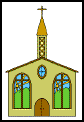
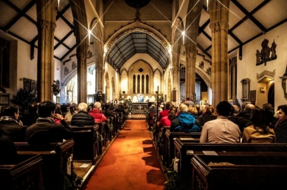
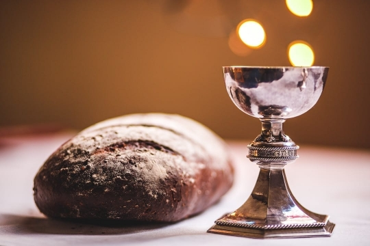

Welcome to Whisper Bay Church!
Verse of the Day:
"For where two or three are gathered together in my name, there am I in the midst of them." - Matthew 18:20
Welcome to our church website! We are thrilled to have you here. At Whisper Bay Church, we believe in the power of community and the love of Christ. Join us for our services and events, and become a part of our family.
About Us
Whisper Bay Church has been serving the community of Whisper Bay for over 50 years. Our mission is to spread the love of God through worship, outreach, and fellowship.
Services
- Sunday Worship:
- 9:00 AM - Traditional Service
- 11:00 AM - Contemporary Service
- Wednesday Bible Study:
- 7:00 PM - Fellowship Hall
- Youth Group:
- Fridays at 6:00 PM
Events
- Upcoming Events:
- Church Picnic - July 20th, 12:00 PM at Whisper Bay Park
- Charity Bake Sale - August 5th, 10:00 AM in the Church Courtyard
- Community Outreach - Every Saturday at 10:00 AM
Gallery
Check out our latest photos from recent events and services!
 Parish Council
- Ales Thomas - Chair
- Sevi Jelbert - secretary
Contact Us
Address:
Whisper Bay Church
123 Harmony Lane
Whisper Bay, Cornwall
Phone:
(555) 123-4567
Donate
Support our church and our mission by donating today. Your generosity helps us continue our work in the community.